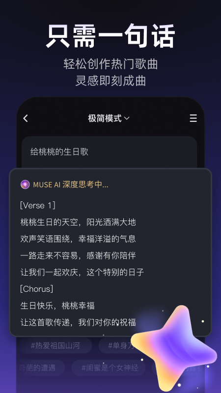
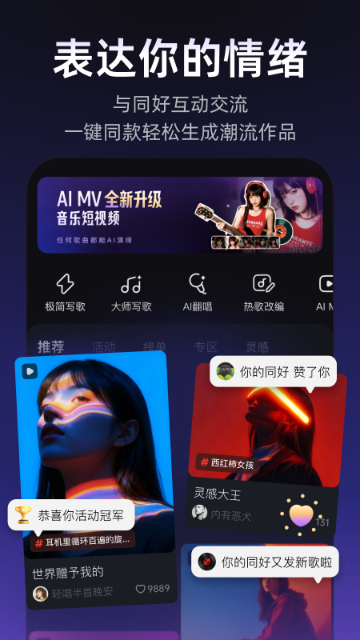

用了一周 AI 写歌 App，说说它到底能帮普通人做点什么
从一句话生成到纯音乐模式，上手 Muse AI 七天的真实体验——好的地方直接夸，别扭的地方也不藏着。
朋友圈里最近刷到好几条朋友发的 AI 生成歌曲，配文都是"这居然是 AI 写的"。好奇心被勾起来，先去Muse AI官网了解了一下定位，才去应用商店装了 Muse AI——说实话，一开始没抱太大期待，觉得就是个玩具级的噱头产品。用了一周下来，想法有点变了。

初印象：界面干净，但积分门槛有点劝退
装完打开，主界面就摆了三个大字入口：一句话写歌、热歌改词、大师模式。配色是偏暗的紫蓝色调，看起来不花哨，操作路径也直给——没什么弯弯绕绕的层级，想写歌直接点进去就行。
但第一个让我皱眉头的是积分系统。新用户送的积分够生成大概五六首歌，之后就得充值或者等每日签到。这个设定本身合理，毕竟 AI 模型跑起来有成本，但体验上就是刚想试试效果就被提醒"积分不够了"，热情被浇了半盆。好在日常签到能补点，凑凑够玩一阵子。
实际用下来：三个最能打的功能
一句话写歌，真的只需要一句话
这是我最先试的功能，也是最惊艳的。输入框里敲一句"深夜在地铁上看着窗外发呆"，选个风格标签（流行、民谣、电子什么的），点生成——等个二三十秒，一首歌就出来了。
说实话第一次听到成品的时候我愣了一下。不是那种"AI 味"很重的机械旋律，是真的有起伏、有情绪的一段完整作品。歌词不空洞，能扣住我给的那句场景，副歌部分甚至有点好听。我连着生成了五六首不同主题的，质量稳定在一个区间里——不会每首都惊喜，但也没有哪首让人尴尬。
最实用的一点：生成完可以直接在 App 里分享出去，或者导出音频文件。我有两首导出了当手机铃声，朋友问我在哪找的歌，我说是 AI 写的，他们都不信。
纯音乐模式：给视频配乐的懒人神器
后来翻大师模式的时候发现了纯音乐开关，勾上之后生成的就是无人声的器乐曲。这个功能简直是我这种短视频创作者的刚需——之前剪 vlog 找配乐，要么版权问题不敢用，要么搜半天找不到调性合适的。
现在好了，直接输一段描述，比如"清晨阳光洒进书房，窗外有鸟叫"，选个钢琴或者吉他的乐器模板，生成的纯音乐刚好能用。我试过好几次，生成的曲子长度一般在一分钟左右，剪到视频里不用怎么裁剪，开头结尾过渡自然。
有个小技巧：同一主题我会先跑一版带人声的当正式作品发社区，再跑一版纯音乐的当视频配乐用——两首曲子调性一致，账号内容的整体感一下就上来了。
歌曲串烧：把自己的作品攒成一张"迷你专辑"
这个功能不生成新歌，而是把你已经生成的作品串成连续的合集。我一开始觉得这有什么用，直到我把这一周写的五首歌串在一起发给朋友——他一次点开就能听完，比我发五个链接要体面太多。
串烧的逻辑很简单：多选歌曲 → 排顺序 → 生成。有个小讲究是调性相邻的歌放一起串，风格落差太大的话听感会跳。我按情绪排过一次，从轻快到沉郁，整条听下来居然有叙事感。
那些让人有点别扭的地方
用着用着也遇到一些不爽的点。热歌改词功能是我最期待也最失望的——它可以拿热门歌曲的旋律重新填词，但改完之后生成的人声经常有跑调或者咬字奇怪的情况，试了三四次，没有一版让我满意到敢发出去。可能是我选的歌本身难度高，也可能是这个功能的模型还在打磨中。
版本差异也是个让人头疼的问题。应用商店的最新版已经到 3.7 了，而从网盘下载拿到的一般是 3.2.8。两个版本核心的写歌功能没区别，但 3.7 更新的虚拟艺人 MV 功能只有新版才有。更尴尬的是我朋友的安卓 6.0 设备装不上 3.7，只能停留在旧版——想用新功能就得换手机或者刷机，这门槛有点高。
还有就是版权问题。AI 写的歌能不能商用，协议里说得比较模糊，我翻了Muse AI文档也没找到一个明确的 yes 或 no。个人娱乐发朋友圈肯定没问题，但要是想拿来做广告配乐或者视频 monetization，最好先问清楚客服。

适合谁，不适合谁
用下来一周，我觉得这款产品的定位其实挺清晰的。
适合的人：想玩玩 AI 创作的普通人——不需要懂乐理、不需要会乐器，就想体验一下"自己写首歌"是什么感觉。短视频创作者也适合，纯音乐模式能直接当配乐用，省了找版权素材的麻烦。还有喜欢玩社交的，可以发社区和别人的作品互动，看看陌生人用 AI 能写出什么有意思的东西。
不太适合的：认真想做音乐创作的人。AI 生成的东西再好听也是模板化的，没有那种活生生的个人表达在里面。还有商用需求的，先把版权问题摸清楚再动手。
总结
Muse AI 不是什么革命性的创作工具，它更像是把"写歌"这件原本门槛很高的事，降到了"说一句话"的程度。这个降维本身就是有意思的——当创作不再是专业人士的特权，普通人也能时不时体验一把"我写了首歌"的满足感。
积分要省着点用，旧版功能确实不如新版，改词功能还需要打磨——这些问题都在，但一周用下来我还是忍不住每天打开看一眼，想说的是：如果你也好奇 AI 写歌能到什么程度，别光刷朋友发的了，自己装一个试试，挺有意思的。
相关资料在 GitHub、Gitee 和 GitCode 都有同步，国内网络访问选 Gitee 或 GitCode 更顺畅。